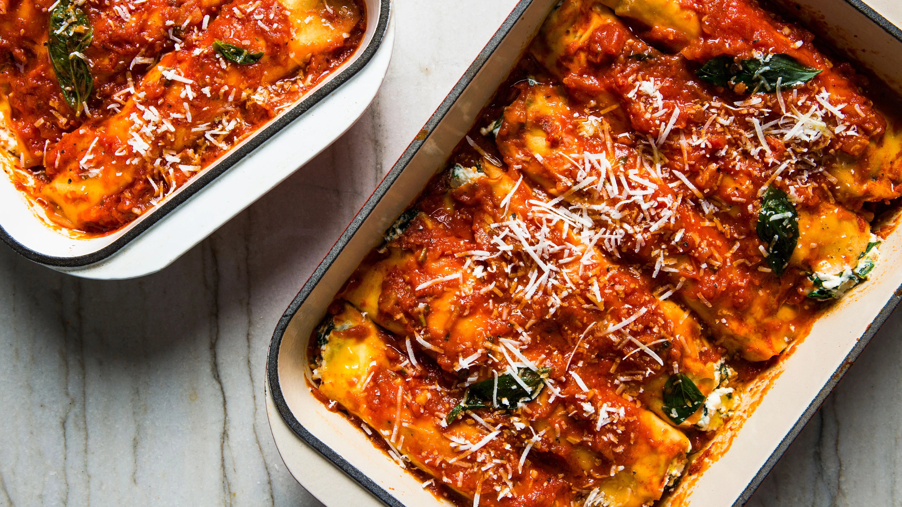

Manicotti

Description
Recipe from "The Sopranos Family Cookbook", easy to make, can use any Marinara Sauce or Sunday Gravy recipe you like.
Ingredients
For the crepes
- 1 cup flour
- 1 cup water
- 3 large eggs
- 1/2 teaspoon salt
- 1 tablespoon oil
For the filling
- 2 lbs ricotta cheese
- 4 ounces mozzarella cheese
- 1/2 cup parmesan cheese
- 1 large egg
- 2 tablespoons parsley
- 1 pinch salt
- fresh ground pepper
- marinara sauce
Steps
- To make the crepes: in a large bowl, whisk together the ingredients until smooth.
- Cover and refrigerate for at least 30 minutes.
- Heat a 6 inch skillet over medium het.
- Brush the pan lightly with oil.
- Holding the pan in one hand, spoon in about 1/3 cup of the crepe batter and immediately rotate and tilt the pan to completely cover the bottom.
- Pour any excess batter back into the bowl.
- Cook the crepe for one minute, or until the edges turn brown and begin to lift away from the pan.
- With your fingers, flip the crepe over, and cook for 30 seconds more, or until spotted with brown on the other side.
- Slide the cooked crepe onto a plate.
- Cover with a piece of wax paper.
- Repeat with the remaining batter, stacking the crepes and separating each one with a piece of wax paper (The crepes can be made up to 2 days ahead. Cover with plastic wrap and store in the fridge until ready to use).
- Turn the oven to 350.
- To make the filling: stir all the filling ingredients together in a large bowl.
- Then, to assemble: Spoon a thin layer of the marinara sauce into a 13x9x2 inch baking dish.
- Place about 1/4 cup of the filling lengthwise down the center of a crepe, roll it up, and place it seam side down in the dish.
- Continue with the remaining crepes and filling, placing them close together.
- Spoon on the remaining sauce.
- Sprinkle with the cheese.
- Bake for 30 to 45 minutes, or until the sauce is bubbling and the manicotti are heated through.
- Serve hot.